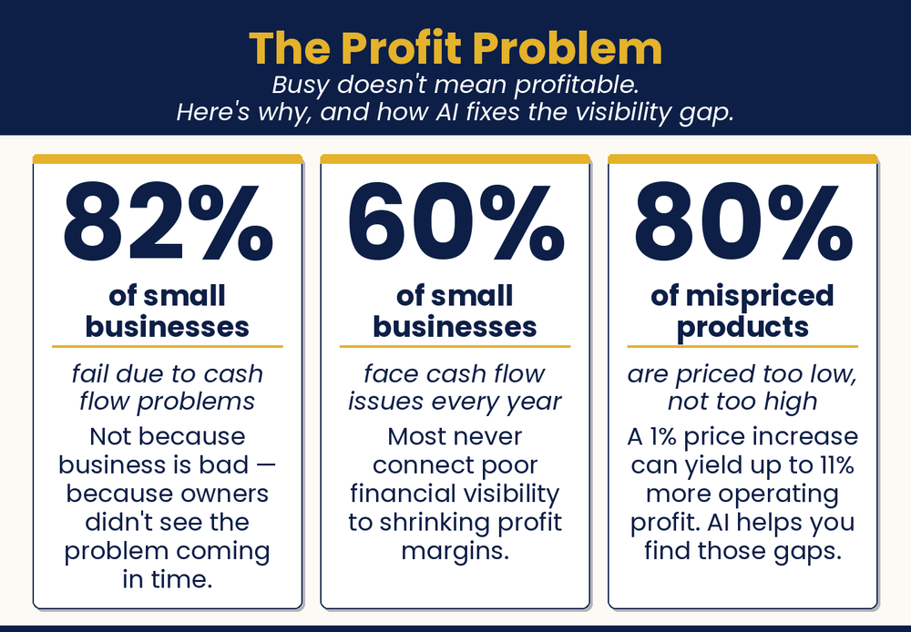

Chapter 16 — AI and Your Bottom Line
I’m So Busy. Why Am I Broke?
Why aren’t we more profitable when I’m working so hard?

Chapter Recap
You work hard, but the profit does not always show it. This chapter helps you find where the money leaks. AI can audit your prices, which is the fastest way to grow profit. It can project your cash flow so you see tight months early. It can review expenses and flag waste. You bring the numbers. AI helps you read them. Then you decide what to change. Use it with your accountant, not instead of one.
Note: These prompts help you understand your own numbers. They are not financial advice. Check important decisions with a qualified accountant or bookkeeper. Never paste customer names, account numbers, or other sensitive data into AI.
In This Chapter
- Why Some Owners Avoid Financials
- The AI Pricing Audit
- Forecasting Cash Flow
- The Profit Leak Finder
- Understanding Your Cost Structure
- When to Talk to a Real Human
Grab-and-Go Prompts
1. Full Pricing Audit — the highest-leverage money move
You are a small business pricing strategist. I run a [business type]. Here are my current prices for key products or services: [list them]. Here are my approximate costs for each: [list them]. What is my gross margin on each? Which items look underpriced relative to the value they deliver? What pricing strategies do similar businesses typically use?
2. Forecast Cash Flow — see tight months early
You are a small business financial advisor. Here are my projected revenue and expenses for the next three months: [paste numbers]. Build me a simple cash flow projection showing starting balance, monthly inflows, monthly outflows, and ending balance for each month. Identify any month where I might be cash-negative and suggest one or two ways to fix it.
3. Profit Leak Finder — review your expenses
You are a small business cost analyst. Here are my monthly business expenses: [paste list]. Identify any that look like: (1) recurring subscriptions that might be reduced or eliminated, (2) costs that businesses like mine typically negotiate or shop around for, or (3) expenses that seem disproportionate relative to what they likely contribute.
4. Find Your Most Profitable Work — focus on high margin
You are a small business profitability analyst. Which segments of my business appear to have the highest margin? Which appear least profitable or potentially margin-negative? What would happen to my overall profitability if I focused more on the high-margin areas and reduced or repriced the lower-margin ones?
5. The 20% Cost-Cut Question — pressure-test your spending
If I had to cut 20% of my costs without cutting quality or capacity, where would you start?
Download
- 📄 Pricing and Profitability Prompt Pack — prompts for pricing audits, cash flow projections, expense reviews, and profitability analysis.
Your Move
Do one of three things right now: (1) List your five key products or services and their current prices and approximate costs, then ask AI to calculate your gross margins and flag anything that looks underpriced. (2) Export your monthly expense list and run it through the profit leak finder prompt. (3) Give AI your best estimates of the next three months’ revenue and fixed expenses and ask for a simple cash flow projection. Pick one and do it today.

Read the full chapter in
AI Jiu-Jitsu: Run Circles Around the Big Guys, the book this toolbox comes from.
Prefer to have it set up for you? BreakThru Growth offers AI coaching and done-for-you setup for small businesses → BreakThruGrowth.com